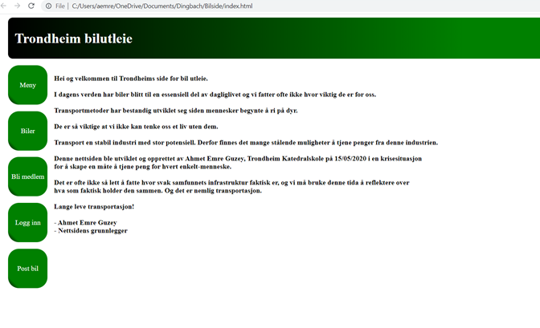
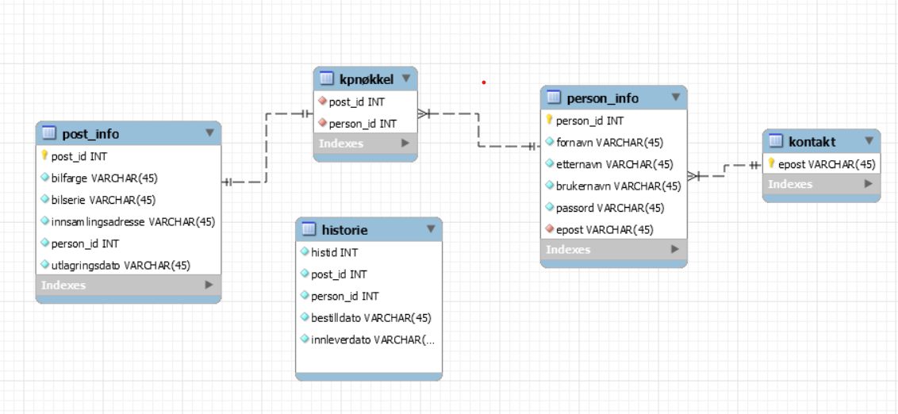

Prosjektbeskrivelse - Bilside
Hensikt
Hensikten med prosjektet er å bruke databaser i en nettside. Jeg mente at en bilutleining nettside ville være en bra måte å ibruksette kunnskapet mitt om MySQLdatabaser samt PHP på.

Prosjekt
Da jeg først tenkte på hva jeg skulle ha med i prosjektet, tenkte jeg på en tittel, og en meny på sida slik at man kan ha med mer på skjermen om gangen. Nettsiden bruker 18 nettsider til sammen, for form og form prosessering.
MySQL

MySQL database inneholder fem tabeller. Den første tabellen, post_info (heter “informasjon” i selve databasen i mysql.klasserom.net), viser informasjon om bilpostene. Når man vil utleie en bil, lager de en slags “post”. Innholdet om bilen, eventuelt farge, serie, merke, pris, innsamlings adresse osv. sendes til MySQL databasen på mysql.klasserom.net, behandles og sendes videre til andre klienter når de går til sida med bilposter for mulighet om å leie bil.
Tabellen person_info bevarer informasjon om hver enkel person som bruker nettstedet. Dersom man ønsker å bli bruker og registrerer seg, er det person_info tabellen som informasjonen blir satt inn i.
I bildet satt ovenfor, er kpnøkkel en kombinert primærnøkkel med en-til-en forkobling mellom seg og post-info samt mange-til-en forkobling med person_info. Den finnes for å vite hvilken bil (fra post_info) noen (fra person_info) har bestilt.
Historie tabellen viser rett og slett hvem som har bestilt hva, når de har bestilt den og om de har levert den tilbake.
Kontakt tabellen har bare epost, og ble satt opp for å oppfylle tredje normalformen, der det kan bare være en primærnøkkel i en tabell.
Innlogging/utlogging
Det er tre sider som er assossiert med innlogging/utlogging. Den første er nemlig siden som inneholder